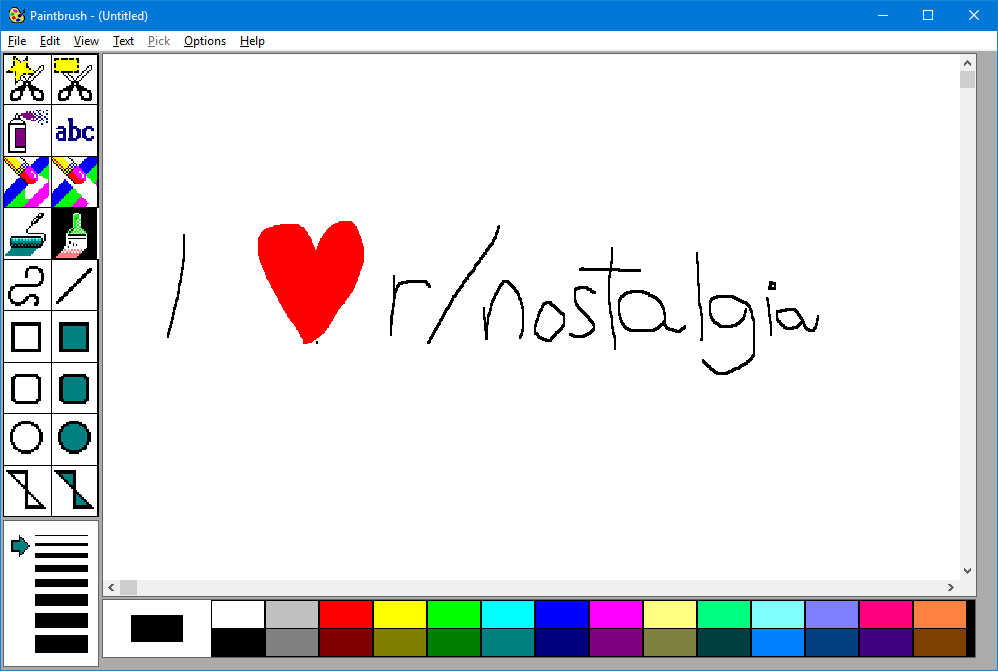

Since I first saw PC, somewhere around 1993, I fell in love with them. Back then, my favourite was Prince of Persia and that "Paintbrush" app... I used to draw in it for hours. Funny thing, I never liked drawing in real life - actually,
I hated it. But, there was something mesmerizing in that spray tool. Heck, when that PC died, and we got new one, with Win95 and Paint, I missed a Paintbrush app. Paint was sooo limited compared to it... :) :) :)
As I grow
up, computers occupied a lot of my attention. To dismay of my parents, who where not exactly happy that their son spent so much time in front of the monitor. Unfortunately, life is known for taking some crazy turns, so my love
for PC didn't exactly have time to flourish. Other stuff became more important...
I chosen something else as my profession. Not that I feel any sorrow because of that - I like it very much. Just, PCs and technology were always
my passion. My first love. And you don't forget your first love, ever, don't you? When my wife came and said - oh, but you are so good with computers, how that you cannot make website, I felt almost challenged.
Not that this
website is anything special, but, I just wanted to play around a bit... Once in my life I wanted to write blog, even stories. So, I fused nice (write a blog) and useful (make a website). Not that I ever wrote anything... or made
a useful website... :)
Some stuff that currently keeps my attention:
What's wrong with our football team?
 Serbia, once more, failed to make any significant result on World Cup. Basically, even before competition started, we concluded that it is enought that we participate.
But why is that? Our players are far from top-class, but they are not bottom-barell either. Yet, they have no belief in themselves, or team.
Serbia, once more, failed to make any significant result on World Cup. Basically, even before competition started, we concluded that it is enought that we participate.
But why is that? Our players are far from top-class, but they are not bottom-barell either. Yet, they have no belief in themselves, or team.
This is first big competition for us after long 8 years. Looked from that perspective,
it is quite a success for this team that we have been in Russia at all. Yet, that attitude is hardly going to take us anywhere!. And I don't think that was attitude of our team after qualifications ended. But, one big change happened
before World Cup... Our coach - Slavoljub Muslin - was fired. Guy who took us to first big competition after 8 years got FIRED!!!
Why? I do not know. Probably brilliant minds in our football association do. Whatever their
reason are, they fired coach who built this team, literally days before competition started. And new "coach", because I am not sure that Mladen Krstajic deserves that title, went even further, by changing captain - Branislav Ivanovic...
Yes, new captain is also great player, but you do not change captain just like that, for no reason.
We all know reason - Branislav Ivanovic have a spine, contrary to new coach, and he had his opinion about Slavoljub Muslin
change - not just that he had opinion, but he was not afraid to tell it. And therefore, captain, leader, became "persona non grata". Since Bane is great guy, he took it silently, not to distrupt team further before World Cup. And
because he is well aware with what kind of human slime he is dealing, he will probably keep silent about whole thing and simply end his representative carrier - this was his last big competition anyway.
But that doesn't change
the fact that our team was misguided and stressed, instead of prepared properly for competition. Well done, Mr. Krstajic, well done football association. Thank you very much!
Paintbrush
This is old image editor from Win3.1 days. I used to paint with it so many times. I spent hours painting - or at least trying to paint. Not that I was talented. But that spray tool - it looked like miracle to me, seven-eight year old boy back then. We had matrix printer, it was damn loud and very slow. And my favourite part, to annoy my sisters, was to paint something - read nothing - and then print it on that matrix printer. Nothing would be seen actualy on paper, it looked horrible, but it was guaranteed 10 minutes of annoying loudness in house. Both of them hated it. Eh, those were good times...